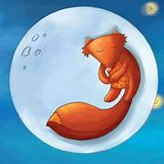

Ra Mu, ra zä ts'edi, pa ya mfoni ra 'Buä, ra luna. "Nthe'ä ga nthu", hmä ra Mu. "Ma 'bu, nk'a, pa nthe'ä mä'i". Ra Mu mbot'i ra 'Buä, pero 'Buä pa nzä hñä. Ra Mu nzoki, nzoki, nthe'ä mbot'i. Ja 'ngu, ya mpefi, ya nzä. Nu pa 'na, ra 'Buä hmä: "Mu, ¿gut'i ga nzoki? Nthe'ä ga mbot'i nk'a. Nthe'ä ga mä'i nk'a. Nthe'ä ga mföi nk'a. Ma 'bu pa mä'i ra 'bu, pa nthe'ä mbot'i". Ra Mu hñä. Ja 'ngu, pa mä'i ra 'Buä. Pa 'na, ra Mu nthe'ä nzoki. Nthe'ä mbot'i ra 'Buä. Pero pa mä'i ra 'Buä, ja 'Buä mbot'i ra 'bu ja dehe. Ntha, ra Mu nt'ä, pa mä'i ra 'Buä ja 'ngu.

El Zorro, muy astuto, tenía envidia de la Luna. "Ella no es especial", pensaba. "Voy a subir al cielo y la atraparé". El Zorro trató de saltar para alcanzar a la Luna, pero ella siempre estaba lejos. Saltó y saltó, sin éxito. Al final, estaba cansado y derrotado. Una noche, la Luna le habló: "Zorro, ¿por qué te esfuerzas tanto? No me puedes tocar. No me puedes atrapar. No me puedes vencer. Mejor ven, siéntate y escucha mi luz. Ilumina tu camino en la oscuridad". El Zorro entendió. Se calmó y mi a la Luna. Ya no saltó. Ya no trató de atraparla. Pero al contemplarla, la Luna lo tocó con su luz plateada. Y desde entonces, el Zorro ya no está triste, pues tiene la luz de la Luna como su guía en la noche.